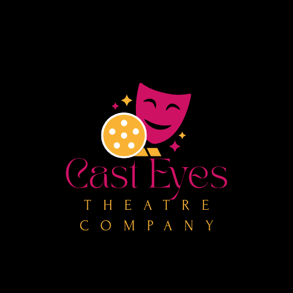

Founded in 1989, Cast Eyes Theatre Company began as a small collective of passionate directors, designers, and actors determined to bring ambitious, emotionally powerful productions to their local community. Originally operating out of a converted warehouse, the company quickly gained a reputation for bold staging choices, innovative storytelling, and a deep commitment to artistic collaboration. Today, Cast Eyes Theatre Company occupies a fully equipped, 450-seat theatre in the city’s cultural district. The venue includes rehearsal studios, a workshop for set construction, dedicated lighting and sound booths, and an adaptable performance space capable of hosting everything from intimate dramas to large-scale musicals. Although the company maintains a core ensemble of in-house directors, performers, stage managers, and technicians, it also regularly collaborates with external production companies. Throughout the year, the theatre hosts touring shows, amateur groups, educational youth productions, and occasional one-night showcase events. This mixture of resident and visiting productions helps the theatre maintain a dynamic, ever-changing programme. The company’s policy of revisiting successful plays every few years has also become a signature feature of its identity. Cast Eyes is known for presenting multiple interpretations of the same play over long periods, each shaped by different directors, casts, and creative teams. A classic tragedy might reappear as a modern reinterpretation; a musical could return with new choreography; or a historical drama may be revived with updated staging technology. These revivals are highly anticipated by audiences who enjoy seeing how familiar material evolves over time. Behind the scenes, the technical support team plays a crucial role in making all of this possible. From maintaining the lighting rigs and sound systems to assisting visiting companies with equipment setup, the technical staff ensures that every production—old or new—can be staged safely, efficiently, and at a professional standard. With a reputation for creativity, versatility, and community engagement, Cast Eyes Theatre Company continues to be a central part of the city’s performing arts landscape, offering audiences both beloved classics and daring new works year after year.
19 Far Road, Bigtown, Co Cork, Ireland